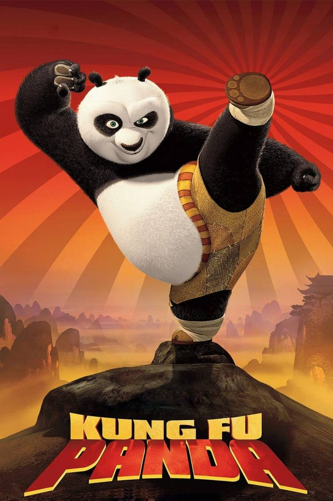

O filme foi lançado em 2008 pelo estudio da DreamWorks, dirigido por Mark Osborne e John Stevenson, Até hoje é considerado um excelente filme de animação, para se assistir com os amigos e fámilia.
O Kung Fu Panda recebeu o Oscar de melhor animação de 2009, O melhor filme de animação da Globo de ouro
Bilheteria
635,7 milhões de USD

Avaliações
As avaliações do filme foram boas, os críticos destacaram a quebra de esteriótipos, humor que agrada todos os públicos, história coerente e bons efeitos especiais. Você pode ver as avaliações abaixo, foram retirados do site rotten tomatoes.